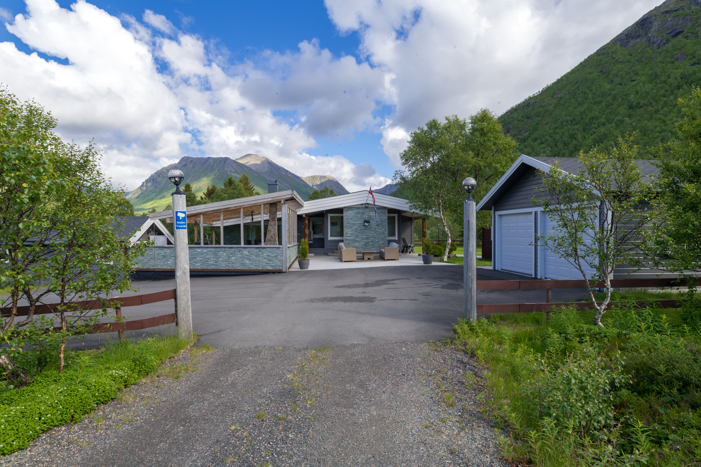
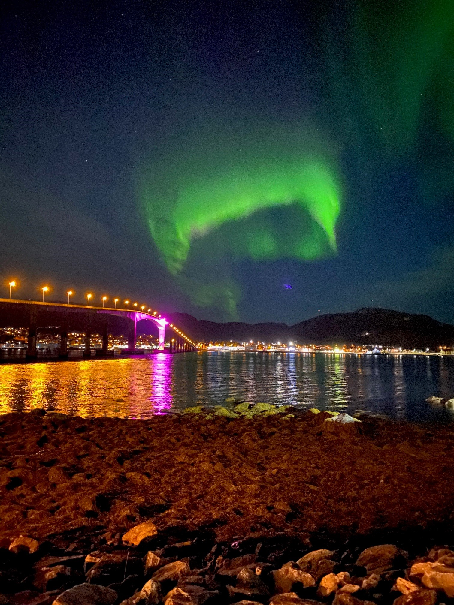
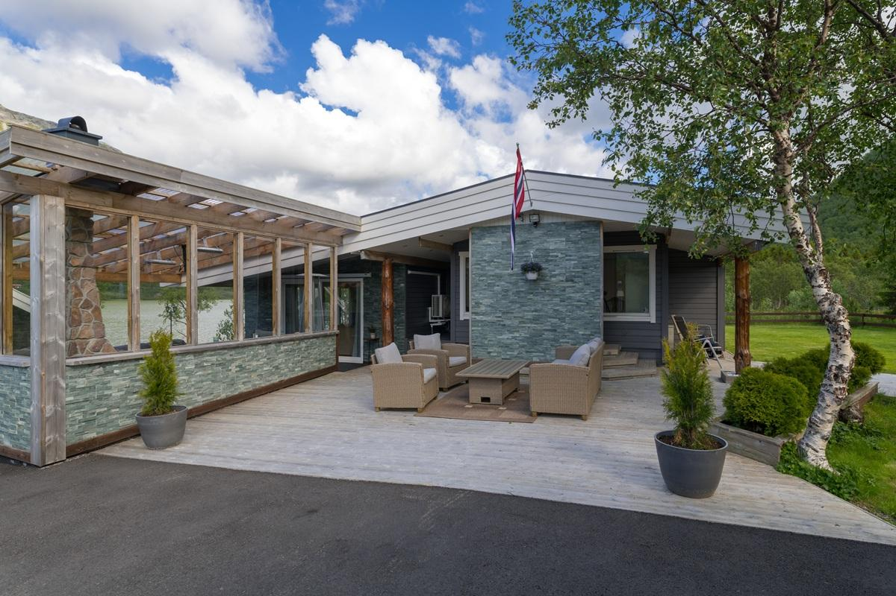

Kvitnes Gård in Vesterålen has become the first Michelin-starred restaurant in Northern Norway — and the only one inside the Arctic Circle.
Some news deserves more than a social media post. When Kvitnes Gård — a working farm restaurant tucked into the dramatic coastline of Vesterålen — was awarded One Michelin Star at the Nordic Countries 2026 ceremony in Copenhagen on 1 June, it felt like a moment the entire region had been quietly waiting for.
We at Vesterålen Lodge have long considered Kvitnes Gård a neighbour and a kindred spirit. Both of us believe that this corner of Norway — wild, raw, and astonishingly beautiful — has something genuinely rare to offer the world. Kvitnes's star is proof that the world is starting to agree.

Chef Halvar Ellingsen, whose menus are built entirely from ingredients sourced north of the Arctic Circle.
Kvitnes Gård is not simply a restaurant. It is a farm — a living, working landscape at postcode 8413 in the heart of Vesterålen — where head chef Halvar Ellingsen and farm owner Helge Mørck have built something that refuses easy categories. The philosophy is simple, and it is uncompromising: every ingredient on the plate must come from north of the Arctic Circle.
That means the journey to a meal at Kvitnes begins years before it reaches the table. Good compost, nutrient-rich soil, the right feed, the right weather, and a harvest and slaughter carried out with care. As their own words put it: "Everything is connected — shift one thing, and everything shifts."
"The journey to a meal at Kvitnes begins not when it is prepared in the kitchen. It takes years of preparation — from good compost, nourishing soil, the right conditions for growth, and a harvest done gently."
Halvar came to Kvitnes having already earned his credentials at some of Norway's most celebrated kitchens — Bagatelle, Palace Grill, Ylajali, and Arakataka — and having won the Norwegian Chef Championship and competed on the national team. But he wanted to build something from the ground up, on his own terms, in a landscape he understood from childhood. Born into a family that foraged, fished, and slaughtered its own meat, he brought with him not just technique but instinct.

The farm provides the foundation for everything served at the restaurant — from the soil up.
The world's northernmost Michelin-starred restaurant is right on our doorstep. Let us arrange your table at Kvitnes Gård.
Book Your Stay at Vesterålen LodgeThe significance of this star extends well beyond a single restaurant. Kvitnes Gård is now the first Michelin-starred restaurant anywhere in Northern Norway — and, according to food commentators, the only Michelin-starred establishment inside the Arctic Circle anywhere in the world.
Michelin inspectors noted a growing trend towards restaurants that serve their local communities in more flexible, accessible ways — not only through elaborate tasting menus, but through different kinds of experience at different times of day. Kvitnes embodies this: in summer, their Spiseriet in the old yellow barn is open daily from noon, offering everything from coffee and baked goods to a four-course menu, all following the same philosophy as the main restaurant.
The star did not arrive out of nowhere. In 2025, Halvar Ellingsen received the title of International Chef of the Year from Identità Golose, Italy's most prestigious culinary guide and magazine — a remarkable honour for a Norwegian chef based three hours north of the Arctic Circle. Food lovers who follow Nordic cuisine closely had been predicting a Michelin recognition for some time. The international food blog The Hungries noted that the Michelin inspectors had finally made the journey north, and described a star as inevitable.
Kvitnes Gård represents something the Michelin Guide values above almost everything else: a chef with a vision, a place with a soul, and a plate that could only have come from exactly here.
For those of us who call this archipelago home — or who come here to find a different kind of luxury — the star at Kvitnes is a vindication of something we have always believed. Vesterålen is not a second-best destination. It is not a quieter alternative to the Lofoten crowds. It is a place with its own extraordinary character: the light, the sea, the mountains, the silence, and now, officially, home to the world's northernmost Michelin-starred restaurant.
A Michelin-starred dinner in the Arctic deserves a stay to match. Vesterålen Lodge is the closest luxury accommodation to Kvitnes Gård, and we believe the two experiences belong together.
We are more than happy to arrange your reservation at Kvitnes Gård as part of your stay with us. Whether you are planning a full multi-course dinner at the main restaurant — an intimate, unhurried experience that rewards those who have made the journey — or a long, leisurely afternoon at the Spiseriet in the old yellow barn, we will make sure the table is waiting for you.
The Spiseriet is open daily from noon throughout the summer season (24 June – 5 August), serving everything from fresh-baked pastries and coffee to a four-course menu, all following the same Arctic-larder philosophy as the main restaurant. It is a wonderful way to experience Kvitnes in a more relaxed setting, before or after a hike, a boat trip, or simply a slow morning on the water.
For those seeking the full experience, Kvitnes also offers overnight stays on the farm itself — and combining a night there with nights at Vesterålen Lodge gives you the best of both worlds: the intimacy of the farm and the comfort and amenities of a dedicated luxury lodge.
Speak to us when you book, and we will help you plan an itinerary around the table you deserve.
Vesterålen sits just north of Lofoten — one of the world's most celebrated travel destinations — and shares the same dramatic scenery of mountain, fjord, and open sea, without the crowds. Guests who combine a visit to both archipelagos will find that Vesterålen holds its own completely, and now with the world's northernmost Michelin star on its doorstep, it has a culinary claim Lofoten cannot match.
The region also offers something few places on earth can: the chance to dine under the midnight sun in summer, when daylight never fades and the landscape glows gold well past midnight, or to return in winter for the otherworldly spectacle of the aurora borealis dancing over the Arctic Ocean. And for those who play golf, the legendary Lofotenliks — one of the world's most dramatic golf courses, carved into the cliffs between mountain and sea — is within easy reach. A Michelin-starred dinner, the northern lights, and a round at Lofotenliks: this is a journey that belongs on any serious bucket list.
Congratulations to Halvar, Helge, and everyone at Kvitnes Gård. You have put Vesterålen on the world's most coveted culinary map — and earned the northernmost Michelin star on the planet. We could not be proud to have you as neighbours.
Kvitnes Gård has already caught the attention of the world's most dedicated fine dining communities. The Hungries — a members-only global food club run by food writer Anders Husa, with hundreds of members worldwide — predicted the star months in advance and was tracking Kvitnes closely. Their Discord community is one of the most active spaces for Michelin hunters comparing notes across the Nordic countries.
If you're working your way through Norway's Michelin list, or building a Nordic fine dining itinerary, Kvitnes Gård is now an essential stop — and the remoteness is very much part of the point. Pair it with a stay at Vesterålen Lodge and you have a destination worthy of the journey.
The story has been picked up by major media across Norway, Sweden, and Denmark.
🇳🇴 Norway
🇸🇪 Sweden
🇩🇰 Denmark
🌍 International

Set directly on the fjord with stunning mountain views, Vesterålen Lodge offers premium comfort and total privacy. We provide tailor-made Arctic experiences, including guided tours, private boat trips, and dining arrangements.